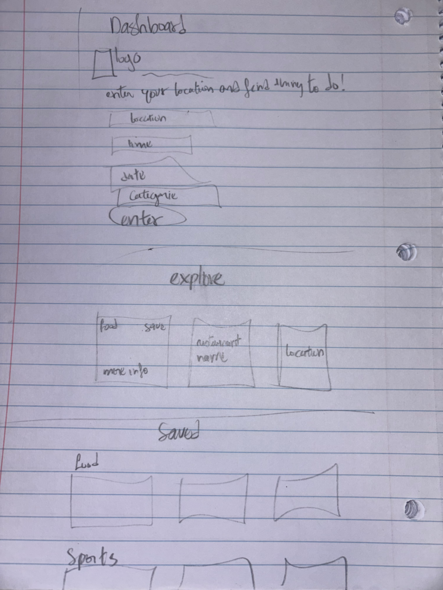

Cerca
A Progressive Web App (PWA)
October 2026
Project Overview
Cerca is a web app I designed and built for my UX 340 course. It helps people find things to do in cities across the United States, users can enter a city, choose a date, time, and category, then browse places and save the ones they want to revisit.
Problem or Goal
When planning a trip to an unfamiliar city, it can take several searches to decide where to go and keep track of interesting places. My goal was to make that process easier by putting search, browsing, and saving in one place.
My Role
I designed the layout and search experience, built the app with HTML, CSS, and JavaScript, and connected it to an API to display place results. I also tested the app with users, made changes based on their feedback, and published it.
Process
I organized the app around three steps: entering a search on the Dashboard, browsing results on Explore, and revisiting places in Saved Items. I asked people to try the app on their own so I could see where they got stuck.

Testing showed that users needed help entering city names and had to retype their search details after leaving the page. I added city suggestions and made the app remember their search details. I also made the results more useful by adding information such as hours and a link to Google Maps.
Outcome
I published a responsive app that lets users search for places, view details, and save or share places they find. The final version supports the main task I set out to design: finding somewhere to go and keeping it for later. Users can also filter saved places by city to find them again more easily.
.png)
.png)
.png)
Reflection
I learned how much small design decisions, like suggesting a city or remembering a search, can affect how easy an app is to use. Publishing was also harder than I expected. I had to fix the code several times before the published version worked as intended. In a future version, I would test the app with more people and explore a way to sync saved places across devices.
Medium
Dreamweaver